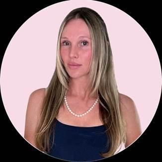
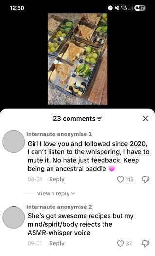
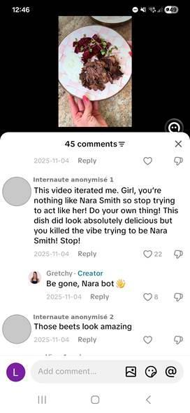
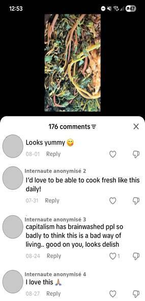

Présentation
Gretchen Adler, connue en ligne sous le pseudonyme « The Healthy Wife », est une créatrice de contenu américaine originaire de Californie du Sud, mère de trois enfants et âgée de 40 ans. Elle s’est fait connaître sur TikTok et Instagram pour ses vidéos de cuisine maison. Elle y reproduit, à partir d’ingrédients bruts, des produits transformés du quotidien — crackers en forme de poisson, biscuits Oreo, céréales type Cinnamon Toast Crunch — présentés comme des alternatives saines à l’alimentation industrielle.
Selon ses propres déclarations, elle ne s’est pas orientée vers la cuisine et la vie au foyer par tradition familiale, mais après la naissance de son deuxième enfant, lorsqu’elle s’est tournée vers un « régime ancestral » fondé sur des aliments non transformés. Elle explique avoir développé ce mode de vie progressivement, sur environ six ans, jusqu’à en faire un message plus large sur l’alimentation industrielle et la santé publique aux États-Unis.


Contenu et esthétique
Son contenu se distingue des figures les plus glamour du mouvement, comme Nara Smith ou Hannah Neeleman, par une esthétique plus accessible : une cuisine familiale filmée sans grande mise en scène, un vocabulaire simple, des ingrédients présentés comme reproductibles par une « famille normale ». Plusieurs observateurs la décrivent précisément comme une version « accessible » et « pratique » du style de vie tradwife.
- Recettes phares : crackers en forme de poisson, Oreos maison, céréales Cinnamon Toast Crunch revisitées à la farine d’einkorn.
- Discours récurrent : rejet des aliments ultra-transformés, méfiance envers « Big Food » et « Big Pharma ».
- Mode de vie : famille, ferme et potager, abattage et préparation d’animaux, transmission aux enfants.
- Modèle économique : programme « Nourishing Kitchen Master Class » à 98 $ et recettes par abonnement à 3 $/semaine.
Ses vidéos recourent souvent à une voix off chuchotée, proche de l’ASMR, associée à des tenues et des décors très soignés : robe vive, cuisine haut de gamme, petit électroménager coloré. Cette voix est l’un des éléments les plus commentés de son style.

Discours et prises de position
Interrogée par Fox News en 2024, elle formule explicitement une critique du salariat féminin et de l’entrée des femmes dans le monde du travail : « We were pushed out of the home. We were pushed into the workplace… » Elle insiste également sur le rôle maternel comme mission sanitaire : nourrir ses enfants pour leur « santé optimale » constituerait une réponse à une « crise sanitaire » nationale.
Ce vocabulaire fait écho au mouvement américain « Make America Healthy Again » — retour à une alimentation non transformée, défiance envers les autorités sanitaires et pharmaceutiques — sans que Gretchen Adler revendique explicitement une étiquette politique. Son positionnement envers le terme « tradwife » reste prudent : elle ne se définit pas strictement ainsi, tout en revendiquant des « valeurs traditionnelles ».
Réactions et exposition médiatique
Les commentaires étudiés illustrent deux réactions récurrentes : la comparaison, parfois hostile, avec Nara Smith, à laquelle Gretchen Adler répond directement, et la gêne provoquée par une esthétique souvent incomprise. Une communauté la soutient également, même si ces commentaires positifs apparaissent statistiquement moins visibles sous ses vidéos virales que les critiques.

